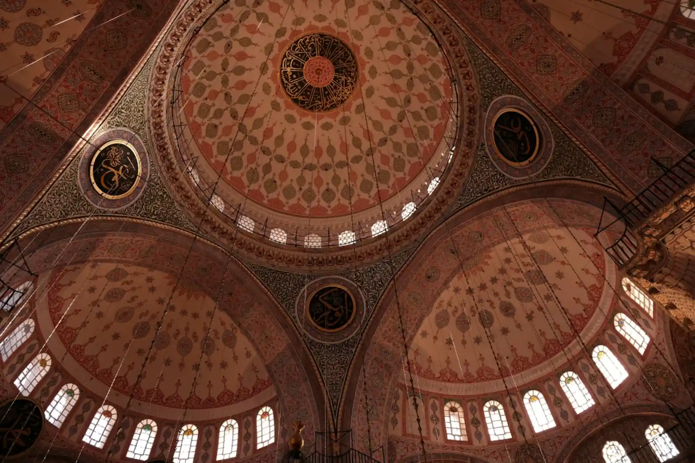
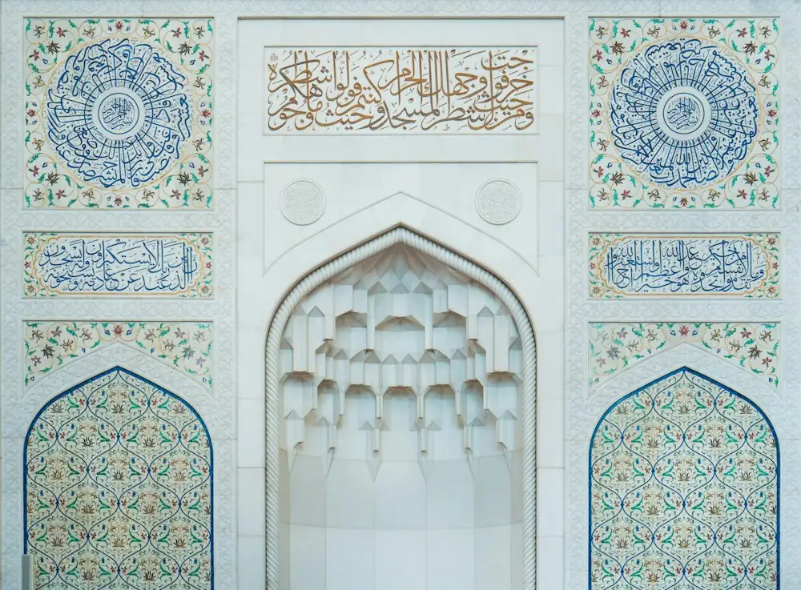

Women’s halaqa
Qur’an reflection, community tea and unhurried conversation.

Led by and for the women of our congregation, in a masjid that carries the name of Maryam (peace be upon her).
Photo: Fatih Beki / Unsplash
Sisters
Qur’an reflection, community tea and unhurried conversation.
A supportive, confidential space for women to share and be heard.
Babies and toddlers welcome — playgroup, activities and peer support.
Reading and discussing books on faith, history and Muslim lives.
Workshops and guidance for couples and families.
Nikah services →A dedicated women’s prayer section is available at the masjid for the daily prayers and Jumu’ah.
Prayer times →
يَـٰمَرْيَمُ إِنَّ ٱللَّهَ ٱصْطَفَىٰكِ وَطَهَّرَكِ وَٱصْطَفَىٰكِ عَلَىٰ نِسَآءِ ٱلْعَـٰلَمِينَ
“O Maryam, indeed Allah has chosen you and purified you, and chosen you above the women of the worlds.”
Join us
Days and times vary through the year. Call (03) 8087 0900 or email admin@virginmarymosque.org.au for the current schedule.